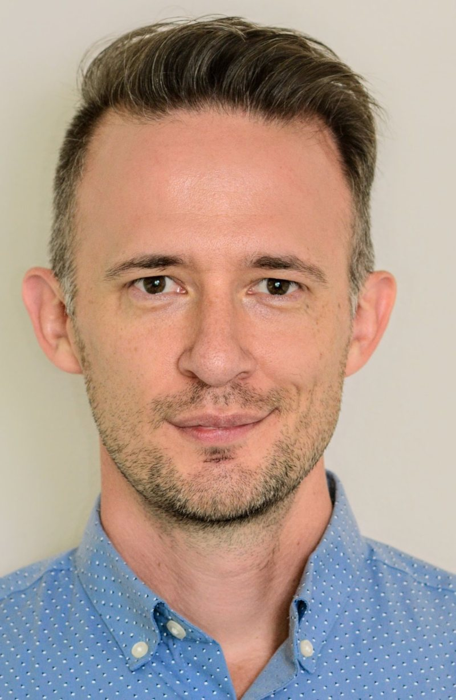

I've been a clinician for 17 years and worked in a variety of settings. I believe that everyone deserves access to mental health.
Supporting families through the hardest times
After graduating from UCLA in 2009, I worked at Children's Hospital Los Angeles, where I supported families in the pediatric and newborn intensive care units, worked with children and families in GI and nephrology, and provided palliative support. I helped people get through the worst times of their lives, and I supervised other clinicians along the way. I also worked on a child-abuse medical team.
Increasing access at Willamette Family Medical Center
From 2013 to 2018 in Salem, Oregon, I created and directed the behavioral health program at Willamette Family Medical Center, a hybrid program that brought together medical and mental health care. Most behavioral health programs in medical clinics focus on referrals. We built something different, a range of support:
- brief check-ins during medical appointments
- support for doctors working with patients they found difficult
- ongoing psychotherapy for people who would otherwise never have been identified as needing mental health care
Many patients came in only because they didn't feel well, and we were able to recognize the mental health needs underneath. I worked with people living with disabilities and chronic illness, ran the whole department, and supervised its clinicians and interns. Increasing access to care is my passion.
How I work today
My deepest training is in Internal Family Systems (IFS), EMDR, and Emotionally Focused Therapy, woven together with AEDP-informed attachment work, ACT, mindfulness, and somatic tools. Clients who typically have difficulty sharing or being vulnerable, especially those who have experienced trauma or abuse, often find an unexpected sense of trust & safety with me. I use HIPAA-secure video and I'm happy to work via telehealth, as well as in person in Bend.
When earlier therapy hasn't been enough
Many of my clients come to me after trying therapy with others and sensing there could be more. I work with long-standing trauma and relationship patterns that haven't shifted. My approach builds safety and trust first, and my attachment lens means the goal is for you to leave therapy with your own resilience and secure connections, ready to thrive on your own.
Training and license
- MSW, UCLA, 2009
- Emotionally Focused Therapy: ICEEFT Externship and Core Skills
- EMDR trained through EMDRIA
- Internal Family Systems (IFS), Level 1, 2026
- Oregon LCSW #L6113
I also offer supervision for MSW associates. You can read more of my profile on Psychology Today.